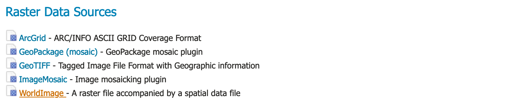
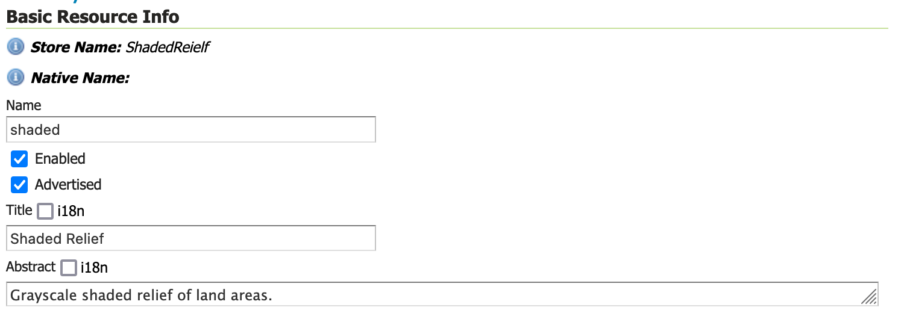
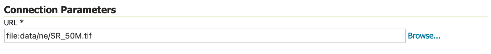
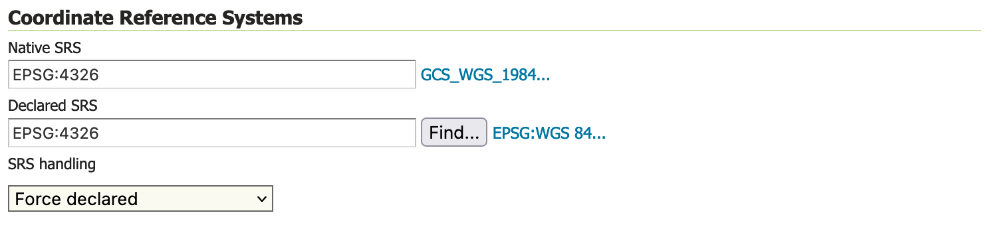
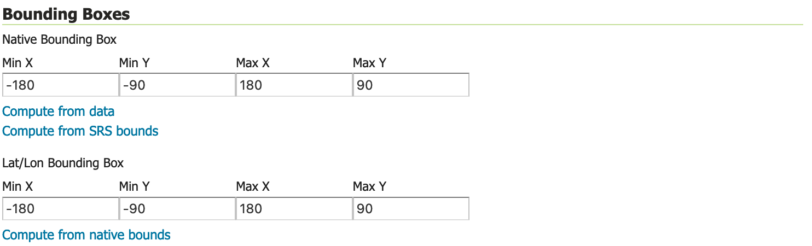
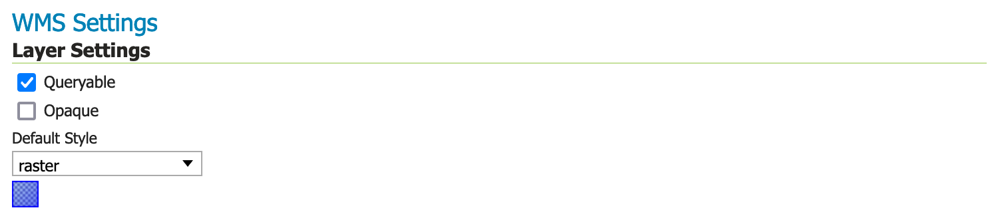
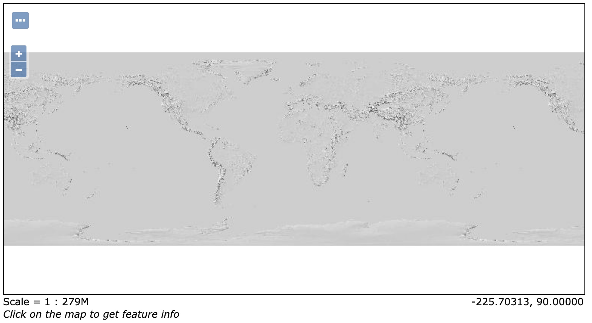

Publishing a Image¶
This tutorial walks through the steps of publishing a World + Image with GeoServer.
Note
This tutorial assumes that GeoServer is running at http://localhost:8080/geoserver.
Data preparation¶
First let’s gather that the data that we’ll be publishing.
Download the Natural Earth 1:50m Shaded Relief raster:
This file contains small scale 1:50m data:
SR_50M.prjSR_50M.README.htmlSR_50M.tfwSR_50M.tifSR_50M.VERSION.txt
This forms a world (the tfw file) plus image (the
tiffile).Move these files into your GeoServer Data Directory
data/nefolder.
Creating a new workspace¶
The next step is to create a workspace for the geopackage. A workspace is a folder used to group similar layers together.
Note
This step is optional if you’d like to use an existing workspace. Usually, a workspace is created for each project, which can include stores and layers that are related to each other.
In a web browser, navigate to
http://localhost:8080/geoserver.Log into GeoServer as described in the Logging In section.
Navigate to .
Click the Add new workspace button to display the New Workspace page.
You will be prompted to enter a workspace Name and Namespace URI.
Name:
tutorial
Namespace URI
http://localhost:8080/geoserver/tutorial
Note
A workspace name is an identifier describing your project. It must not exceed ten characters or contain spaces.
Note
A Namespace URI (Uniform Resource Identifier) can usually be a URL associated with your project with an added trailing identifier indicating the workspace. The Namespace URI filed does not need to resolve to an actual valid web address.
Press the Submit button.
The
tutorialworkspace will be added to the Workspaces list.
Create a store¶
Once the workspace is created, we are ready to add a new store. The store tells GeoServer how to connect to the geopackage.
Navigate to .
This page displays a list of stores, including the type of store and the workspace that the store belongs to.
In order to add the geopackage, you need to create a new store. Click the Add new Store button. You will be redirected to a list of the data sources supported by GeoServer. Note that the data sources are extensible, so your list may look slightly different.
From the list of Raster Data Sources locate and click the WorldImage link.
Raster Data Sources¶
The New Vector Data Source page will display.
Begin by configuring the Basic Store Info.
workspace
tutorialData Source Name
ShadedRelief
Description
Grayscale shaded relief of land areas.
This information is internal to GeoServer and is not used as part of the web service protocols. We recommend keeping the Data Source Name simple as they will be used to form folders in the data directory (so keep any operating system restrictions on character use in mind).
Basic Store info¶
Connection parameters are used to establish the location of your data.
Under Connection Parameters, browse to the location URL of the image, in our example
file:data/ne/SR_50M.tif.The Connection Parameters for our geopackage are:
database
file:data/ne/SR_50M.tif
The use of read_only above indicates that we will not be writing to this GeoPackage, allowing GeoServer to avoid managing write locks when accessing this content for greater performance.
Connection Parameters¶
Press Save.
You will be redirected to the New Layer page (as this is the most common next step when adding a new data store).
Creating a layer¶
Now that we have located the image, we can publish this information as a layer.
On the New Layer page, click Publish beside the
SR_50Mlayer name.The Edit Layer page defines the data and publishing parameters for a layer.
There are three critical pieces of information required on the Data tab before we can even save.
Basic Resource Info - describes how the layer is presented to others
Coordinate Reference System - establishes how the spatial data is to be interpreted or drawn on the world
Bounding Boxes - establishes where the dataset is located in the world
Locate Basic Resource Info and define the layer:
Name
shaded
Title
Shaded Relief
Abstract
Grayscale shaded relief of land areas.
The naming of a layer is important, and while GeoServer does not offer restrictions many of the individual protocols will only work with very simple names.
Basic Resource Info¶
Check the Coordiante Reference Systems information is as listed below.
Note
In this case select
Force declaredto prefer the GeoServer internal EPSG database definition of WGS84 over theprjfile provided alongside the same image.Native SRS
EPSG:4326
Declaired SRS
EPSG:4326
SRS Handling
Force declaredCoordinate Reference Systems¶
Locate Bounding Boces and generate the layer’s bounding boxes by clicking the Compute from SRS bounds and then Compute from native bounds links.
Note
In this case we are choosing a slightly larger bounding box that fully contains the image.
Generating bounding boxes¶
Press Apply to save your work thus far without closing the page.
This is a good way to check that your information has been entered correctly, GeoServer will provide a warning if any required information is incomplete.
Scroll to the top of the page and navigate to the Publishing tab.
Locate the WMS Settings heading, where we can set the style.Ensure that the Default Style is set to
raster.WMS Settings¶
Press Save to complete your layer edits.
Previewing the layer¶
In order to verify that the tutorial:shaded layer is published correctly, we can preview the layer.
Navigate to the page and find the
tutorial:shadedlayer.Note
Use the Search field with tutorial as shown to limit the number of layers to page through.
Click the OpenLayers link in the Common Formats column.
An OpenLayers map will load in a new tab and display the imagery with the default raster style.
You can use this preview map to zoom and pan around the dataset, as well as display the attributes of features.
Preview map of shaded relief¶